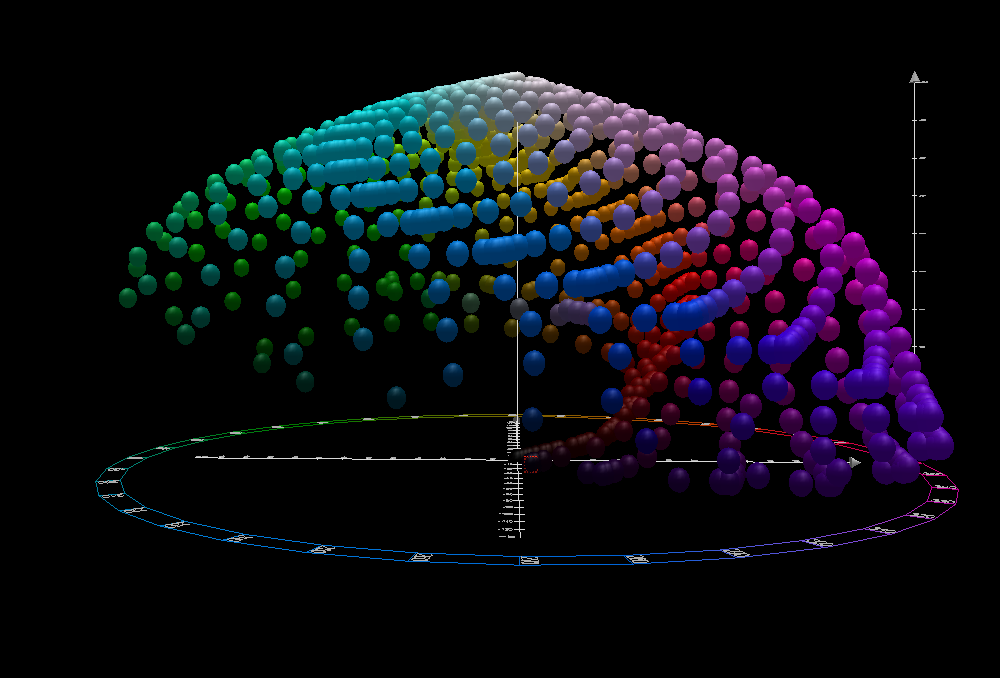

New functions, gradients, and hues in CSS colors (Level 4)
More browsers are starting to support features defined in the CSS Colors Module Level 4 specification, which includes multiple ways to manipulate and display colors in CSS. Let's take a look at color spaces, how to define colors in CSS, what's new in CSS Colors Module Level 4, and how you can use the color functions and features in your projects.
Understanding color spaces
To understand how colors are described in CSS, a quick tour of color spaces will help. A color space is a system for grouping colors based on the defined color models. Color spaces provide a clear and consistent way to describe a color and a way to transform a color to a different color space while still looking the same.
Until CSS Colors Module Level 4, colors in CSS were defined in the RGB (for red, green, and blue) color space and gamut (the total range of colors).

With the addition of HSL (for hue, color, and lightness) support to CSS, you can define colors using the same RGB model, but instead use hue, saturation, and lightness. We'll take a look at RGB and HSL in more detail later in the next section.
Defining RGB colors in CSS
To make a color in the RGB color space, you mix the primary colors red, green, and blue in different ways to get the desired result. You can think of this like the coordinates of a point in a cube, where each axis represents a primary color.
.red {
color: rgb(255 0 0);
}
.green {
color: rgb(0 255 0);
}
.blue {
color: rgb(0 0 255);
}
/* yellow is a mix of red and green */
.yellow {
color: rgb(255 255 0);
}
/* cyan is a mix of green and blue */
.cyan {
color: rgb(0 255 255);
}
For defining an RGB color in CSS, you have the option to either use a keyword for color (like red or blue), a hexadecimal value (#ff0000), or the rgb() function to define the red, green, and blue values as in the examples above.
As of CSS Colors Module Level 4, you no longer need to use rgba() to define an RGB color with an alpha channel because rgb() supports alpha values separated by a slash (/) as demonstrated below.
This example shows how to define the same color by using a keyword, a hexadecimal value, and the rgb() function, including an example to define opacity:
.named-color {
color: red;
}
.hex-color {
color: #ff0000;
}
.rgb-color {
color: rgb(255 0 0);
}
/* makes the color 50% transparent */
.rgba-semi-transparent {
color: rgb(255 0 0 / 0.5);
}
Using HSL for choosing hues
The addition of HSL in CSS Colors (Level 3) was welcome for many developers because it is more intuitive to pick hues based on a color wheel.
We can make a color wheel using the conic-gradient() function and the hsl() function.
The trick to making this gradient cycle through all the hues is described in the Hue interpolation section below.
#color-wheel {
border-radius: 50%;
background: conic-gradient(
in hsl longer hue,
hsl(0deg 100% 50%),
hsl(360deg 100% 50%)
);
}
/* For browsers that don't support hue interpolation methods */
@supports not (background: conic-gradient(in hsl longer hue)) {
#color-wheel {
background: conic-gradient(red, yellow, green, cyan, blue, magenta, red);
}
}
<div id="color-wheel"></div>
If we combine these two snippets, we can make a color wheel that cycles through all the hues available in the RGB color space:
The hsl() function works similar to the rgb() function, but accepts hue as an angle on the color wheel and saturation and lightness as values.
As with rgb(), you can add an alpha channel for transparency (or opacity) to hsl(), which leaves hsla() as a legacy function along with rgba():
.red-hsl {
color: hsl(0 100% 50%);
}
.green-hsl {
color: hsl(120 100% 50%);
}
/* Make the color 50% opaque */
.green-hsl {
color: hsl(120 100% 50% / 0.5);
}
Another convenient aspect of the HSL function is that you can make variations of a color by changing the saturation and lightness instead of trying to calculate RGB values. If you've chosen a specific color for a website theme, for example, you can modify the saturation and lightness of the color to create a secondary color that still fits the theme. This is illustrated below:
.button {
color: hsl(200 100% 70%);
}
/* A darker version of the button color */
.button--secondary {
color: hsl(200 100% 50%);
}
/* Lower saturation makes the button less vibrant */
.button--inactive {
color: hsl(200 50% 70%);
}
What's new in CSS Colors Module Level 4?
This specification version adds a number of new color functions that use different ways of representing colors, and they all allow you to specify a color using attributes like hue, lightness, and saturation. The new color functions enable you to use more vibrant colors that are outside the RGB gamut, so there's a larger range of colors available on supported displays.
Support for more color spaces and gamuts
With the support for additional spaces and gamuts, you're not limited to describing colors in the RGB color space; you can now use Display P3, CIELAB, Oklab color spaces. Let's take a quick look at what this all means.
Display P3 uses the P3 gamut and represents a range of colors wider than sRGB (standard RGB). It's useful for more vibrant colors that are used in modern displays. However, you need to be mindful about providing fallbacks for users with devices that don't support it.
CIELAB is a uniform color space (UCS) that defines colors based on how they are perceived by the human eye. The main purpose of this model is so that the same distance in color between two points in the color space should appear equally different to viewers.
Oklab is a newer color space that uses the same model structure as CIELAB but is made through "numerical optimization of a dataset of visually similar colors", so the values are intended to be more accurate than CIELAB.
Instead of a wheel, cylinder, or cube, the CIELAB and Oklab color spaces can be represented as three-dimensional spaces that look like this:

New functional notation for colors
The new color functions help to describe the values in the color spaces we saw in the previous section. Let's take a look at each of the new functions and how they work.
The lab() functional notation describes CIELAB colors using lightness, red/green-ness, and yellow/blue-ness along the "a" and "b" axes in the color space.
.lab-red {
color: lab(87.6 125 104);
}
.lab-green {
color: lab(87.8 -79 81);
}
The lch() functional notation describes CIELAB colors using lightness, chroma, and hue.
Hue is the angle on the color wheel that represents the color.
.lch-red {
color: lch(54.3 107 40.9deg);
}
.lch-green {
color: lch(87.8 113 134deg);
}
The oklab() functional notation describes Oklab colors using lightness, red/green-ness, and yellow/blue-ness along the "a" and "b" axes in the Oklab color space.
.oklab-red {
color: oklab(0.63 0.22 0.13);
}
.oklab-green {
color: oklab(0.87 -0.2 0.18);
}
The oklch() functional notation describes Oklab colors using lightness, chroma, and hue.
.oklch-red {
color: oklch(0.93 0.39 28deg);
}
.oklch-green {
color: oklch(0.87 0.29 142deg);
}
Aside from the new color spaces, there's a hwb() functional notation for HWB colors, which are defined using hue, whiteness, and blackness.
HWB uses the RGB color space and is similar to HSL, but considers whiteness and blackness instead of saturation and lightness:
.hwb-red {
color: hwb(0deg 0% 0%);
}
.hwb-light-red {
color: hwb(0deg 30% 0%);
}
.hwb-dark-red {
color: hwb(0deg 0% 30%);
}
/* Cycle through the color wheel */
.hwb-green {
color: hwb(120deg 0% 0%);
}
.hwb-blue {
color: hwb(240deg 0% 0%);
}
Lastly, there's a color() functional notation that allows you to specify colors in predefined color spaces:
.green-display-p3 {
color: color(display-p3 0 1 0);
}
.blue-rec2020 {
color: color(rec2020 0 0 1);
}
.blue-srgb {
color: color(srgb 0 0 1);
}
You can also combine the color() functional notation with a media query to specify a fallback color space:
.green-display-p3 {
color: color(display-p3 0 1 0);
}
@media (color-gamut: srgb) {
.green-display-p3 {
color: color(srgb 0 1 0);
}
}
Syntax changes for color functions
The syntax for the rgb() and hsl() functions has changed with the intention of making them easier to use.
The commas separating the values are no longer required and you can use a slash to specify an alpha value for the color:
/* old syntax */
rgb(255, 0, 0);
hsl(0, 100%, 50%);
/* new syntax */
rgb(255 0 0);
hsl(0 100% 50%);
/* new syntax with alpha channels */
rgb(255 0 0 / 0.5);
hsl(0 100% 50% / 0.5);
All the new functions use the above type of syntax with no separating commas between values and a slash to delimit the alpha channel from the color values.
Hue interpolation
With the new color spaces, one of the benefits that doesn't involve digging deep into color science is for creating gradients.
Interpolation is when you calculate one or more values between two known values, so if you have a gradient from red to blue, interpolation is how you calculate which colors are in the range between red and blue.
When creating a linear-gradient() or similar CSS gradients, you can use in (for interpolation) followed by the color space of the gradient:
.hsl {
background: linear-gradient(in hsl, blue, red);
}
Comparing gradients in different color spaces
We can create a quick example to compare gradients in different color spaces. In the example below, we have a gradient from blue to red in the standard RGB color space, and then we have the same gradient in different color spaces:
.rgb {
background: linear-gradient(to right, blue, red);
}
.hsl {
background: linear-gradient(in hsl to right, blue, red);
}
.lch {
background: linear-gradient(in lch to right, blue, red);
}
.lab {
background: linear-gradient(in lab to right, blue, red);
}
.oklch {
background: linear-gradient(in oklch to right, blue, red);
}
.oklab {
background: linear-gradient(in oklab to right, blue, red);
}
This gives us a good idea of how the gradients look in different color spaces and how the interpolation works in each one:
Using hue interpolation modes in gradients
There are some interpolation modes that control the direction around the color wheel that the hue should be interpolated in color spaces with hue angles:
<div class="hsl in-function">
<p>HSL</p>
</div>
<div class="hsl-named in-function">
<p>HSL named</p>
</div>
<div class="hsl-longer in-function">
<p>HSL (longer)</p>
</div>
<div class="hsl-named-longer in-function">
<p>HSL named (longer)</p>
</div>
<div class="fallback">
<p>Standard fallback</p>
</div>
/* From 39deg to 60deg, taking the shortest path around the color wheel */
.hsl {
background: linear-gradient(
to right in hsl,
hsl(39deg 100% 50%),
hsl(60deg 100% 50%)
);
}
/* We can also use named colors */
.hsl-named {
background: linear-gradient(to right in hsl, orange, yellow);
}
/* This gradient cycles back through 0deg around the color wheel */
.hsl-longer {
background: linear-gradient(
to right in hsl longer hue,
hsl(39deg 100% 50%),
hsl(60deg 100% 50%)
);
}
/* The same effect can be achieved with named colors */
.hsl-named-longer {
background: linear-gradient(to right in hsl longer hue, orange, yellow);
}
/* For browsers that don't support interpolation modes */
.fallback {
background: linear-gradient(to right, blue, red);
}
Browser support
Most of the syntax described in CSS Colors Module Level 4 is supported in the latest versions of Chrome and Safari, with support for color functions landing in Firefox 113.
Specifying the color space and interpolation modes in linear gradients from the examples above are supported in Chrome and Safari, but not yet in Firefox.
You can have a look at the MDN <color> page for browser compatibility data on the rest of the features we've covered in this article.
Summary
Here's a quick recap of the highlights of everything we've covered in this article:
-
For the RGB color space, the
hwb()functional notation allows you to specify colors using hue, whiteness, and blackness. -
For CIELAB color space, you can use
lab()andlch()functional notations. -
For Oklab (similar to the CIELAB color space but with updated data), you can use
oklab()andoklch()functional notations. -
For those who want to dive deep into different color spaces,
color()allows you to usecolor(srgb)for standard RGB andcolor(display-p3)for Display P3 used in wide-gamut displays. There are other color spaces that are appropriate for specialists such as photographers, video professionals, and color science researchers.color(rec2020): Rec2020 broadcast industry standard color spacecolor(prophoto-rgb): ProPhoto RGB color space used by photographerscolor(a98-rgb): Adobe RGB color spacecolor(xyz): CIE XYZ color space whose axes use linear light intensity to better predict color mixingcolor(srgb-linear): linearized sRGB color space
What's next?
CSS Color Module Level 5 describes a color-mix() functional notation that allows you to mix two colors using a specified weight.
This function is already supported in multiple browsers, so you can start experimenting with it today, but it's worth keeping an eye on the MDN color-mix() page for browser compatibility data.
In the color() function, you'll be able to use custom color spaces defined using color(--my-color-space 0 0 0) that's loaded from an external file using the @color-profile rule.
.plum-pink-mix {
color: color-mix(in lch, plum, pink);
}
/* Custom color space */
@color-profile --example-color-space {
src: url("https://example.org/my-color-profile.icc");
}
.header {
background-color: color(--example-color-space 10% 20% 30%);
}
Useful resources
- Color picker by Lea Verou
- gradient.style gradient generator
- High definition CSS color guide (2023)
- A guide to modern CSS colors with RGB, HSL, HWB, LAB and LCH (2021)
- hwb() – a color notation for humans? (2021)
- LCH colors in CSS: what, why, and how by Lea Verou (2020)
- A perceptual color space for image processing (2020)